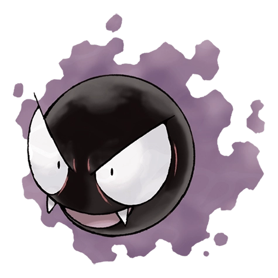

Назад
Гастли

Гастли — Покемон 1 поколения под номером 92 в Покедекс. Обитает он в регионе Канто и относится к Призрачному и Ядовитому. В основном, тело Гастли состоит из газообразного вещества. Сильный ветер может его легко сдуть. Покемоны подобного типа часто прячутся целыми группами под навесами домов, избегая разрушительного воздействия ветра.
Тип:
Ядовитый
Призрачный
Эволюция
# 092 Гастли
=>
# 093 Хонтер